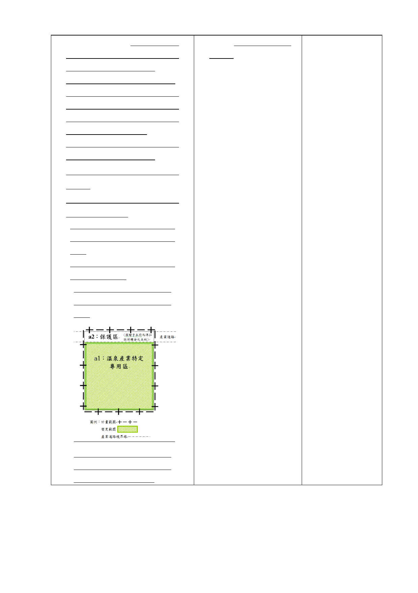

總和之20％計算，但捐贈予本府
之土地得扣抵回饋金。其計算公
式如下（詳圖1示意圖）:
T＝【a1×m1】×20％-【a2×m2】
T：應繳交之總回饋金額。如T為
負值，則毋須繳交回饋金，且申
請人不得要求將差額移轉於其
他開發計畫案中扣抵。
【a1×m1】：溫泉產業特定專用
區之土地公告現值總額。
a1：溫泉產業特定專用區之土地
面積。
m1：溫泉產業特定專用區之土地
當年度公告現值。
【a2×m2】：捐贈予本府而得扣
抵回饋金之土地公告現值總
額。
a2：捐贈予本府而得扣抵回饋
金之土地面積。
m2：捐贈予本府而得扣抵回
饋金之土地當年度公告現
值。
％計算，回饋項目以代
金支付。
圖1：配合新闢設及退縮留設
道路之私有土地須捐贈而得
扣抵回饋金範圍示意圖
三、本案係市府 104 年 6 月 2 日府都規字第 10430033203 號函送到會，
自 104 年 6 月 3 日起公開展覽 30 天。
-5-